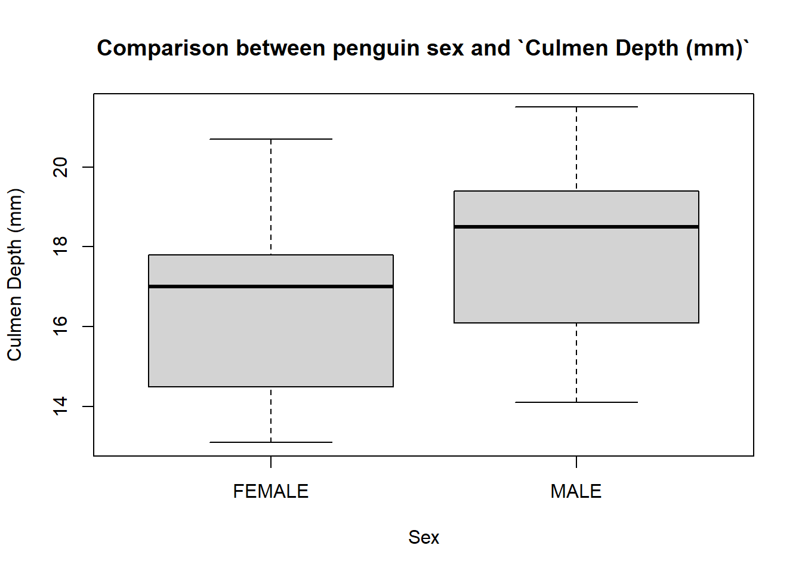
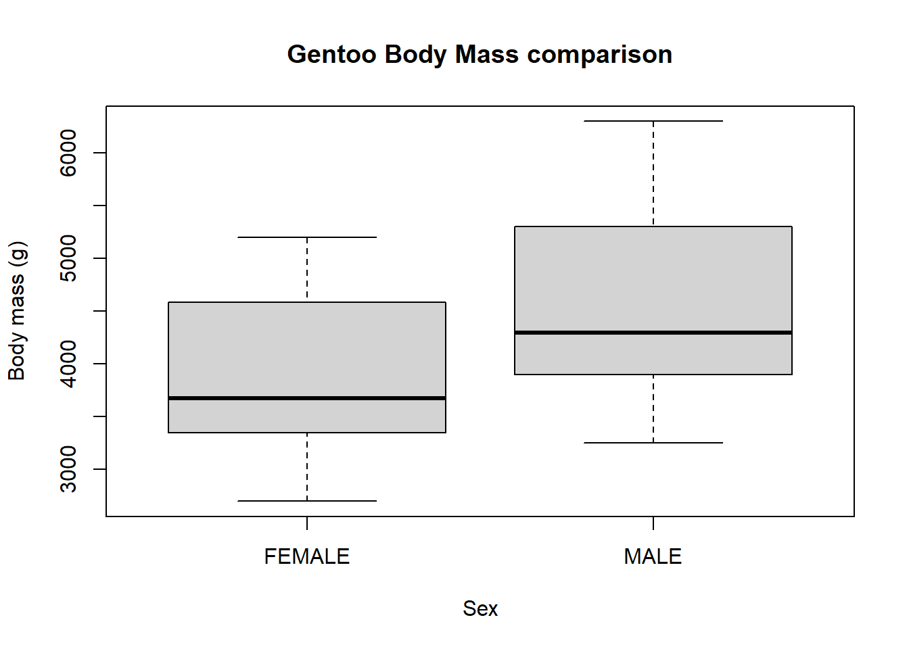
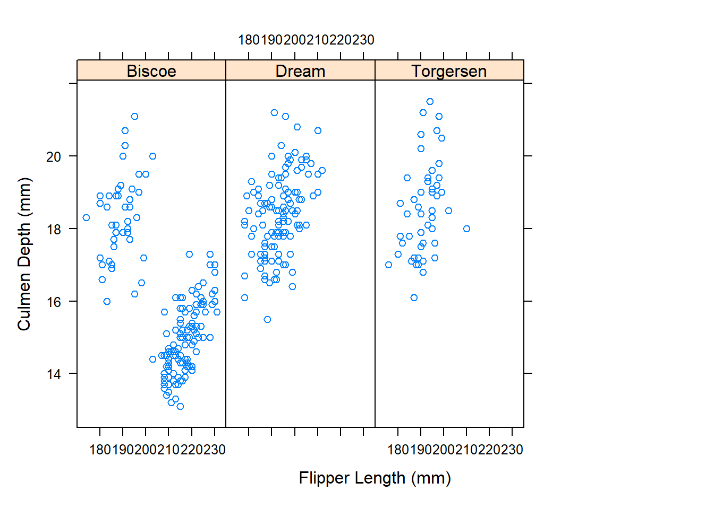

#load needed packages.
require(dplyr) #for data processing/cleaning
require(tidyr) #for data processing/cleaning
require(skimr) #for nice visualization of data
require(ggplot2) #for visualization of data
require(lattice) #for visualization of dataanalysis_code
Analysis script
#this script loads the cleaned data and generated graphs and plots to help visualize #the data to help anwser questions and saves it as Rds file in the Analysis_Code folder
—- packages ——–
This needs to run to load the R script so we can include the code chunks below.
Note that you can pull in more than one R script if you want.
#load needed packages.
—- loaddata ——–
#load data.
#path to data
data_location <- "../../Data/Processed_data/penguins.csv"
data_path <- "../../Data/Processed_data/"
#load data.
cleandata <- read.csv(data_location, check.names=FALSE)
#look at data
skimr::skim(cleandata)| Name | cleandata |
| Number of rows | 333 |
| Number of columns | 8 |
| _______________________ | |
| Column type frequency: | |
| character | 4 |
| numeric | 4 |
| ________________________ | |
| Group variables | None |
Variable type: character
| skim_variable | n_missing | complete_rate | min | max | empty | n_unique | whitespace |
|---|---|---|---|---|---|---|---|
| Species | 0 | 1.00 | 6 | 9 | 0 | 3 | 0 |
| Region | 0 | 1.00 | 6 | 6 | 0 | 1 | 0 |
| Island | 0 | 1.00 | 5 | 9 | 0 | 3 | 0 |
| Sex | 9 | 0.97 | 4 | 6 | 0 | 2 | 0 |
Variable type: numeric
| skim_variable | n_missing | complete_rate | mean | sd | p0 | p25 | p50 | p75 | p100 | hist |
|---|---|---|---|---|---|---|---|---|---|---|
| Culmen Length (mm) | 3 | 0.99 | 82.12 | 43.48 | 1.0 | 46.0 | 85.0 | 119.0 | 165.0 | ▆▇▇▇▅ |
| Culmen Depth (mm) | 0 | 1.00 | 17.16 | 1.99 | 13.1 | 15.5 | 17.3 | 18.7 | 21.5 | ▅▆▇▇▂ |
| Flipper Length (mm) | 0 | 1.00 | 201.10 | 13.93 | 174.0 | 190.0 | 197.0 | 213.0 | 231.0 | ▂▇▃▅▃ |
| Body Mass (g) | 0 | 1.00 | 4212.39 | 799.39 | 2700.0 | 3550.0 | 4050.0 | 4750.0 | 6300.0 | ▃▇▆▃▂ |
summary(cleandata) Species Region Island Culmen Length (mm)
Length:333 Length:333 Length:333 Min. : 1.00
Class :character Class :character Class :character 1st Qu.: 46.00
Mode :character Mode :character Mode :character Median : 85.00
Mean : 82.12
3rd Qu.:119.00
Max. :165.00
NA's :3
Culmen Depth (mm) Flipper Length (mm) Body Mass (g) Sex
Min. :13.10 Min. :174.0 Min. :2700 Length:333
1st Qu.:15.50 1st Qu.:190.0 1st Qu.:3550 Class :character
Median :17.30 Median :197.0 Median :4050 Mode :character
Mean :17.16 Mean :201.1 Mean :4212
3rd Qu.:18.70 3rd Qu.:213.0 3rd Qu.:4750
Max. :21.50 Max. :231.0 Max. :6300
##1.Is there a difference between females and males among the three species of penguins?
s1 <- cleandata #saving data before we edit it
s1$Sex <- as.factor(s1$Sex) #changing the sex of the penguins into categorical/factor variables
plot(s1$Sex )plot(x = s1$Sex, y = s1$`Body Mass (g)`, main = "Comparison between penguin sex and body mass", xlab="Sex", ylab="Body mass (g)") #Sex vs Body mass--all speciesplot(x=s1$Sex, y=s1$`Culmen Length (mm)`, main = "Comparison between penguin sex and culmen length`", xlab="Sex", ylab="Culmen Length (mm)")#Sex vs Culmen Length-- all speciesplot(x=s1$Sex, y=s1$`Culmen Depth (mm)`, main = "Comparison between penguin sex and `Culmen Depth (mm)`", xlab="Sex", ylab="Culmen Depth (mm)")#sex vs Culmen Depth--all species
plot(x=s1$Sex, y=s1$`Flipper Length (mm)`, main = "Sex vs. `Flipper Length(mm)`", xlab="Sex", ylab="Flipper Length(mm)") #Sex vs Flipper Length--all species###Looking at just Adelie Sex comparison
with(s1[s1$species=="Adelie",], plot(x = s1$Sex, y = s1$`Body Mass (g)`, main = "Adelie Body Mass comparison", xlab= "Sex", ylab= "Body mass (g)")) #Adelie Sex vs Body Masswith(s1[s1$species=="Adelie",], plot(x=s1$Sex, y=s1$`Culmen Length (mm)`, main = "Adelie Culmen Length comparison`",xlab="Sex", ylab="Culmen Length (mm)")) #Adelie Sex vs Cumlen Lengthwith(s1[s1$species=="Adelie",], plot(x=s1$Sex, y=s1$`Culmen Depth (mm)`, main = "Adelie Culmen Depth comparison", xlab="Sex", ylab="Culmen Depth (mm)")) #Adelie Sex vs Cumlen Depth
with(s1[s1$species=="Adelie",], plot(x=s1$Sex, y=s1$`Flipper Length (mm)`, main = "Adelie Flipper Length comparison", xlab="Sex", ylab="Flipper Length(mm)")) #Adelie Sex vs Flipper Length###Looking at just Gentoo Sex comparison
with(s1[s1$species=="Gentoo",], plot(x = s1$Sex, y = s1$`Body Mass (g)`, main = "Gentoo Body Mass comparison", xlab= "Sex", ylab= "Body mass (g)")) #Gentoo Sex vs Body Mass
with(s1[s1$species=="Gentoo",], plot(x=s1$Sex, y=s1$`Culmen Length (mm)`, main = "Gentoo Culmen Length comparison",xlab="Sex", ylab="Culmen Length (mm)")) #Gentoo Sex vs Cumlen Lengthwith(s1[s1$species=="Gentoo",], plot(x=s1$Sex, y=s1$`Culmen Depth (mm)`, main = "Gentoo Culmen Depth comparison", xlab="Sex", ylab="Culmen Depth (mm)")) #Gentoo Sex vs Cumlen Depthwith(s1[s1$species=="Gentoo",], plot(x=s1$Sex, y=s1$`Flipper Length (mm)`, main = "Gentoo Flipper Length comparison", xlab="Sex", ylab="Flipper Length(mm)")) #Gentoo Sex vs Flipper Length###Looking at just Chinstrap Sex comparison
with(s1[s1$species=="Chinstrap",], plot(x = s1$Sex, y = s1$`Body Mass (g)`, main = "Chinstrap Body Mass comparison", xlab= "Sex", ylab= "Body mass (g)")) #Chinstrap Sex vs Body Masswith(s1[s1$species=="Chinstrap",], plot(x=s1$Sex, y=s1$`Culmen Length (mm)`, main = "Chinstrap Culmen Length comparison",xlab="Sex", ylab="Culmen Length (mm)")) #Chinstrap Sex vs Cumlen Lengthwith(s1[s1$species=="Chinstrap ",], plot(x=s1$Sex, y=s1$`Culmen Depth (mm)`, main = "Chinstrap Culmen Depth comparison", xlab="Sex", ylab="Culmen Depth (mm)")) #Chinstrap Sex vs Cumlen Depthwith(s1[s1$species=="Chinstrap",], plot(x=s1$Sex, y=s1$`Flipper Length (mm)`, main = "Chinstrap Flipper Length comparison", xlab="Sex", ylab="Flipper Length(mm)")) #Chinstrap Sex vs Flipper Length##2. Are the 3 species of penguins different?
s2 <- s1
unique(s2$Species)[1] "Adelie " "Gentoo" "Chinstrap"xyplot(`Body Mass (g)` ~ `Culmen Length (mm)`| Species, data = s2, layout = c(4, 1))xyplot(`Body Mass (g)` ~ `Culmen Depth (mm)`| Species, data = s2, layout = c(4, 1))xyplot(`Body Mass (g)` ~ `Flipper Length (mm)`| Species, data = s2, layout = c(4, 1))xyplot(`Culmen Length (mm)` ~ `Culmen Depth (mm)`| Species, data = s2, layout = c(4, 1))xyplot(`Culmen Length (mm)` ~ `Flipper Length (mm)`| Species, data = s2, layout = c(4, 1))xyplot(`Culmen Depth (mm)` ~ `Flipper Length (mm)`| Species, data = s2, layout = c(4, 1))##3. Is there a difference in penguins between the regions
s3 <- s2
unique(s3$Island)[1] "Torgersen" "Biscoe" "Dream" s3$Island <- as.factor(s3$Island)
plot(x = s3$Island)plot(x = s3$Island, y = s3$`Body Mass (g)`, main = "Island Body Mass comparison", xlab = "Island", ylab = "Body mass (g)") #Island vs Body mass--all speciesplot(x=s3$Island, y=s1$`Culmen Length (mm)`, main = "Island Culmen Length comparison",xlab="Island", ylab="Culmen Length (mm)") #Island vs Culmen Length-- all speciesplot(x=s3$Island, y=s1$`Culmen Depth (mm)`, main = "Island Culmen Depth comparison", xlab="Island", ylab="Culmen Depth (mm)") #Island vs Culmen Depth--all speciesplot(x=s3$Island, y=s1$`Flipper Length (mm)`, main = "Island Flipper Length comparison", xlab="Island", ylab="Flipper Length(mm)") #Island vs Flipper Length--all speciesxyplot(`Body Mass (g)` ~ `Culmen Length (mm)`| Island, data = s2, layout = c(4, 1))xyplot(`Body Mass (g)` ~ `Culmen Depth (mm)`| Island, data = s2, layout = c(4, 1))xyplot(`Body Mass (g)` ~ `Flipper Length (mm)`| Island, data = s2, layout = c(4, 1))xyplot(`Culmen Length (mm)` ~ `Culmen Depth (mm)`| Island, data = s2, layout = c(4, 1))
xyplot(`Culmen Length (mm)` ~ `Flipper Length (mm)`| Island, data = s2, layout = c(4, 1))xyplot(`Culmen Depth (mm)` ~ `Flipper Length (mm)`| Island, data = s2, layout = c(4, 1))
#look at data
##1.Is there a difference between females and males among the three species of penguins?
###Looking at just Adelie Sex comparison
###Looking at just Gentoo Sex comparison
###Looking at just Chinstrap Sex comparison
##2. Are the 3 species of penguins different?
##3. Is there a difference in penguins between the regions
—- savedata ——–
location to save file
analyzeddate <- s3
# location to save file
save_data_location <- "../../Code/Analysis_code/penguins.rds"
saveRDS(analyzeddate, file = save_data_location)
save_data_location_csv <- "../../Code/Analysis_code/penguins.csv"
write.csv(analyzeddate, file = save_data_location_csv, row.names=FALSE)